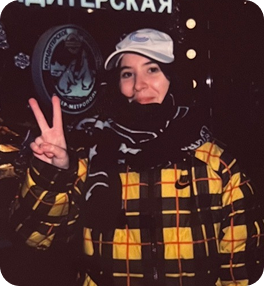

Привет! Я Алиса Поткина
Графический дизайнер с опытом работы более 3‑х лет
Специализируюсь на создании сильных визуальных коммуникаций для брендов: от айдентики, SMM и многостраничной вёрстки до разработки мерча, POS‑материалов и оформления ритейл‑пространств. Рисую от руки на бумаге и в диджитале, создавая уникальную авторскую графику под конкретные задачи бизнеса.

Мои сферы
Креативный дизайн & Брендинг
Разработка визуальных концепций, гайдлайнов, адаптация Key Visual под разные носители и оформление сложных b2b‑презентаций. Есть опыт работы как в брендинговых агентствах, так и in‑house.
Мерч & Полиграфия
Полный цикл создания продукции — от концепции дропа и отрисовки уникальных иллюстраций до создания векторных мокапов и уверенной препресс‑подготовки для типографий.
AI‑интеграция в коммерцию
Профессионально внедряю генеративные нейросети (Midjourney, Stable Diffusion и др.) в пайплайн производства контента. Создаю сложные промпты для точного рендера (включая ювелирные изделия с полным сохранением дизайна) и генерирую высококачественные рекламные имиджи, ускоряя продакшен.
Маркетинговый дизайн
Инфографика для маркетплейсов, ориентированная на метрики (с подтверждённым ростом CTR с 2% до 3.5%+), создание digital‑контента для таргета, разработка наружной рекламы и быстрый монтаж видеовизиток.